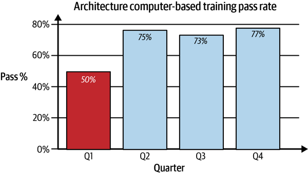
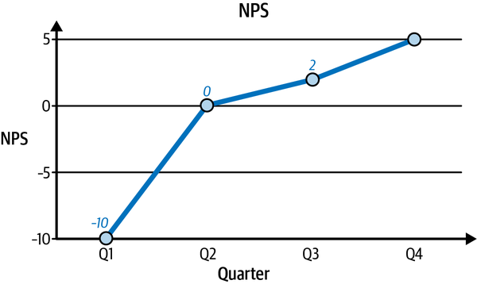
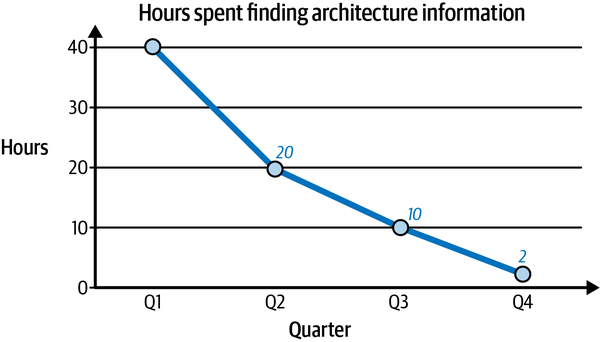
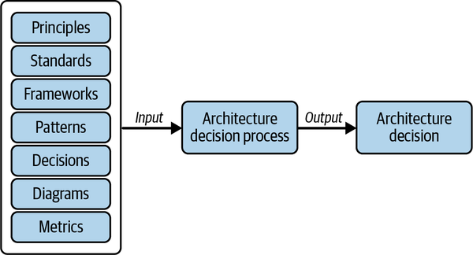
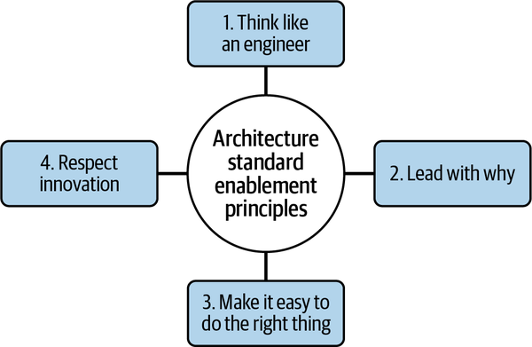
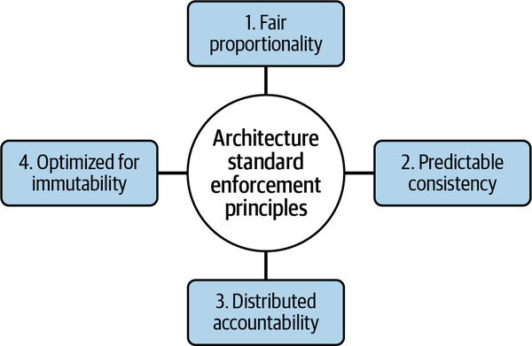

So far, you’ve read that a strong, effective enterprise architecture practice provides the north star, or strategic direction, to define an organization’s technology roadmap through a series of architecture decisions. It may not come as a surprise, then, that a strategy is also needed to guide and establish an effective enterprise architecture practice itself.
If you’re asking, “How do I get started?” you’re in luck, because that’s precisely the question this chapter answers. All strategies start by defining their objectives, so this chapter discusses the objectives of an effective enterprise architecture strategy. Although details of implementation may vary and will be tailored based on unique characteristics of your organization, the objectives will, I hope, resonate with you.
To share the key objectives of an effective enterprise architecture strategy, I have found that the objectives and key results (OKR) framework—which was defined in the 1970s and popularized by Google—is very helpful. What I find special about the OKR framework is that rather than just defining transparent and aspirational goals, the OKR framework includes measurement as a key characteristic.
It is measurement that is novel to architecture. Traditionally, architectural outcomes are perceived in terms of artifacts or deliverables, such as those described in Chapter 1. As a result, it is difficult to qualitatively (let alone quantitatively) tie architecture work to business value. This, in my opinion, is the number one reason it can be so hard to answer the question of what is the value of architecture. And this is why it can be so difficult for architects to be valued by an organization. When all you see is a deliverable, likely to be in document form, but not the business results that the deliverable is driving, then it is very easy to dismiss that deliverable’s value and all the work that it took to create that deliverable.
For example, let’s say a software engineering team was able to significantly reduce cloud storage costs by implementing an architecture pattern. By following this pattern, the team changed the storage class of less frequently accessed objects and implemented a hygiene policy that deleted unused data after a period of time. Who gets credit for the cost savings result? The software engineering team? The architect who contributed the pattern? Ideally, it would be both: the team for making the engineering choice and the architect for providing a reusable solution that benefited the business with cost reductions. Thus, it is necessary to place a business value on the architecture pattern itself—both for what it could save and for what it does save. To measure what it does save requires having a mechanism to track pattern adoption.
Here’s another example. Let’s say it took a solution architect six months to get all relevant stakeholders to agree on a strategy that combines their efforts to build a common platform to provide an enterprise-level service. Now, let’s say it takes a couple of years to build this common platform. What happens? Does the architect get rewarded for delivering the strategy before the platform is built, because it was their leadership that allowed for an agreed-upon impactful outcome? Does the architect get no credit at all, or have to wait to get recognized, because strategy isn’t as tangible a deliverable as the platform itself? Ideally, the strategy is recognized as a key technical deliverable, and furthermore, all stakeholders adhere to the strategic decisions to implement the solution to realize the projected business outcomes. Thus, it is necessary to quantify the benefits and impacts of the strategy itself. What were the benefits of converging on a platform solution, and what were the milestones that demonstrate incremental progress, and therefore incremental business value, for getting to that final destination? These need to be defined as part of the strategy.
So, starting with the effective enterprise architecture strategy itself, bringing in measurability from the onset is key to success. Understanding that the value of architecture is the business outcomes that the architecture drives, and articulating that in a measurable way, are the first key steps to establishing an effective enterprise architecture strategy.
Measurements are intrinsic to OKRs, since they include two types of key results (KRs):
Measures quantifiable outcomes of a process, task, or activity
Measures the success of a particular initiative or effort
Outcome-based KRs also tend to be key performance indicators (KPIs). KPIs are metrics that a company can use to measure the success of its objectives. Moreover, KPIs drive behaviors, so they must be carefully thought through to incentivize the right behaviors. Leading indicator KPIs are metrics that indicate future behavior or impact. Lagging indicator KPIs are metrics based on events that have occurred in the past.
To complete the definition of a KPI and measure KRs, you must also establish the following:
Explicitly stating the measurement’s data source(s) and transformation logic ensures that there is no ambiguity on the logic used to measure. This exercise may also identify opportunities to create the data source or extract from an existing source.
Explicitly stating the owner of the measurement clarifies who is accountable and responsible within your organization to ensure that the KPI is delivered.
Establishing the frequency of the measurement allows an organization to also react to the KPI results on a periodic basis. While many operational KPIs use monthly as a best practice, given that architecture is a more elongated activity, quarterly tends to be sufficient.
Metrics drive behavior. So don’t measure things like this:
If you measure this, the behavior that is incentivized is the number of standards that exist, not the quality or efficacy of those standards. So you may very well see an increase in the number of standards, but they may not add true business value.
If you measure this, you may increase coverage and get more artifacts. However, this doesn’t cover the true objective of why there was effort put into those artifacts.
If you only measure this, you may increase the amount of applications that are compliant, which is good, but not good enough, because you don’t see the business benefit of that compliance. You will get compliance for compliance’s sake, rather than the true goal, which is likely around risk mitigation.
Instead, measure outcome-based indicators to incentivize the behaviors that will drive your organization to the business outcomes achieved with an effective enterprise architecture strategy. The following sections provide examples of such indicators while elaborating on each objective recommended for an effective enterprise architecture strategy.
The first objective focuses on the keyword shared.
To support making great architecture decisions, it is necessary to empower architecture practitioners by providing architecture information at the right time, through the right process, and using the right tools. In other words, making architecture information embedded and accessible is key to effective usage of that information in architecture decision making. Embedded means that following an architecture standard or process, and using an architecture deliverable, is intrinsically part of normal software delivery processes used by the organization. They are not separate, distinct processes that require extra effort to find and follow. Accessible means that architecture information is easily intuitive, usable, and consumable by the desired audience—typically architects, engineers, and product leaders.
Specific KRs will vary based on your organization’s maturity in processes and tools. Here are some sample ones around embedded and accessible architecture information:
Integrate 100% architecture standards into software delivery processes.
Increase library of architecture patterns by 20%.
Ensure 100% of all architecture practitioners complete annual architecture training.
Improve usability of architecture patterns and standards by 20% as measured by surveys.
The outcome of the embedded and accessible objective is that architecture information is readily available and consumable through software delivery processes. So what? What does this outcome really lead to?
The business benefit is that architecture decisions will be more consistent and sustainable, since the practitioners of architecture and their key partners are empowered by the architecture information to inform great architecture decisions.
With this in mind, here are some example leading indicators focusing on the business benefits:
This should increase over time as processes and training materials improve, as illustrated in Figure 2-7.

This should improve over time to indicate a high degree of usability and satisfaction, as illustrated in Figure 2-8.

This should decrease over time as processes and training materials improve, as shown in Figure 2-9.

Here’s an example lagging indicator:
A high number or rate could indicate that the right information wasn’t available, leading to a high degree of change.
Chapter 1 referred to architecture patterns as a typical architectural deliverable. In these sample KRs, I’ve also included a mention of architecture standards. That is just one more type of architecture information. The next section elaborates on architecture information.
Architecture information refers to any type of architectural content that is used to inform an architecture decision. In addition to the architectural deliverables described in Chapter 1, which included architecture patterns, architecture decisions, capability target architectures, and application target architecture, architecture information is more generic and also typically includes principles, standards, frameworks, best practices, architecture diagrams, and metrics.
A principle is a rule or idea that guides you. An architecture principle, then, is simply the rules or ideas that guide consistent architecture decision making. The enterprise architecture strategy function should define architecture principles that are aligned with senior leadership’s beliefs.
For example, an organization may define principles stemming from risk tolerance of vendor lock-in to make consistent build-versus-buy decisions when using cloud services. Some organizations may define cloud native as their principle, having decided that the benefits of using cloud native services outweigh the risks of lock-in. Others may define cloud agnostic as their principle, having decided that the benefits of being free from lock-in outweigh the risks of abstraction.
In this scenario, let’s say an engineering team is trying to make an application architecture decision on whether or not to use a cloud native serverless functions service. In the organization that has the cloud native principle, they are likely to use it assuming the service meets all of their technical requirements. In the organization that has the cloud-agnostic principle, they are likely not to use it, and to stick with containerized services instead as the more portable option.
Either way, this principle will guide the organization’s technical architecture decisions for its solutions, capabilities, and strategies—but only if the decision makers know about and understand what the principles are. Hence, the architecture principles must be transparently embedded and accessible to the decision makers.
Next, let’s look at architecture standards.
An architecture standard defines the requirements that guide consistent architecture decision making to produce well-architected solutions and strategies. A requirement is something that must be true, and results in governance actions if violated. The enterprise architecture strategy function defines standards that the enterprise architecture enablement function empowers end users to meet, and that the enterprise architecture oversight function enforces is met.
Architecture standards can encompass any kind of technology requirement that an organization needs to support the business, and they are effective when that requirement can be both enabled and enforced. For example, an organization may define a standard as granular as what software languages are approved to build applications, or as broad as what makes an application modern. Enabling such standards is what the embedded and accessible objective helps with.
In addition to what must be true, architecture can also define what should be true. Let’s first look at architecture frameworks as a type of architecture information that helps define what should be true.
Architecture frameworks define guidance—structure and methods—that can be used in architecture decision making. The enterprise architecture strategy function and all architecture roles can define reusable frameworks. It is usually not necessary to enforce the use of a specific framework, as they are usually meant to provide a baseline of helpful guidance.
For example, there are well-known enterprise architecture frameworks like TOGAF. Many organizations also establish their own tailored architecture frameworks, such as a build-versus-buy assessment framework to guide architecture decisions around whether or not to develop or purchase software to fulfill a business need. In fact, this book is filled with frameworks in upcoming chapters for you to adapt and use as you see fit.
In addition to an architecture framework, the other kind of architecture information that helps define what should be true, and how it should be true, is architecture best practices. Let’s look at them next.
A best practice in general is a proven way to do something better than alternative ways. An architecture best practice is a proven way to solve a problem that is usually defined in an architecture pattern. Best practices are typically not enforced with the same rigor as a requirement that is defined in an architecture standard.
An organization should define whatever architecture best practices are most relevant to the solutions it needs to deliver. For example, perhaps an organization is trying to modernize by using cloud technology. In that scenario, it would be beneficial to define best practices for migrating applications from on premises to the cloud, and for operating those applications in the cloud, rather than defining best practices for maintaining on-premises fleets. Again, these best practices only return the investment made in defining them when they are used—thus, making sure that these best practices are embedded and accessible to end users is essential.
An architecture diagram is a visualization that explains characteristics of a solution or process. The enterprise architecture strategy function should define standards around diagramming for consistency and easy understanding across multiple diagrams. These standards should include types of diagrams, any industry standards used to model the diagram, the tools used for the diagram, and the legend of colors, shapes, and lines used in the diagram.
Architecture diagrams can be very helpful visual aids to illustrate logical boundaries, concepts, workflows, and sequences, to name a few things. However, they risk becoming stale quickly, where the information is out of date. Thus, freshness and dynamism are important elements of embedded and accessible architecture diagrams. How do I keep an architecture diagram living? How do I codify an architecture diagram so that it is in code, generatable, and queryable rather than a static drawing? These are questions that you should answer as part of your KRs in the embedded and accessible objective.
A metric is a quantifiable measurement or evaluation of something. An architecture metric is therefore a quantifiable measurement in the context of an architectural concern. If you recall, I started this chapter with an emphasis on measuring business outcomes as a result of architecture deliverables.
Architecture metrics are another architecture information type because they help inform architectural decisions. For example, metrics around total cost of ownership and return on investment can make a compelling business case for investing in one technology over another. As another example, metrics around enterprise architecture standard adoption and requirement adherence can tell a factual story around what is working well and what needs improvement in enabling and enforcing those standards.
Now that we’ve reviewed typical architecture information types that can inform architecture decisions, let’s go into the relationship between them a bit more.
I mentioned earlier that architecture information needs to be embedded and accessible to inform architecture decisions. Figure 2-10 shows the relationship between architecture information content types and the architecture decisions that are strengthened by using them at a high level.

For example, let’s say an application architecture decision needs to be made around high availability design, where the business states they need high availability. The following inputs would apply to the decision makers:
Guidelines such as what constitutes a fault domain, cloud native versus not
Requirements such as recovery time objective and recovery point objective
Best practices around highly available application architectures
Previous decisions around scaling, monitoring and alerting, database type
Visualizations of the application’s deployment architecture
Another example in the solution architecture space could be around an architecture decision for investing in a new capability. The following inputs would apply to the decision makers:
Principles such as modernization
Requirements such as technology standards for capabilities—is there already an existing technology solution that meets the new capability need?
Build versus buy, domain-driven design
Previous decisions on related capabilities
Last but not least, an example in the enterprise architecture space could be around an architecture decision such as a new technology standard, like standardizing on a database type:
Principles such as vendor stickiness, modernization
Frameworks such as analysis of alternatives
Previous decisions on related standards
Thus, you can see how there are various types of architecture information that need to be available to a given architecture role, and to all the partners that they have in making a decision, at the time that the decision needs to be made.
Chapter 4 discusses common mechanisms for making such information available.
The more embedded, accessible, and just-in-time available architecture information is, the more reuse and efficiency you get from it being able to inform architecture decisions.
With this embedded and accessible objective and KRs, architecture information will be more effectively used in both making architecture decisions and adhering to architecture standards. Speaking of adhering to architecture standards, let’s look at an objective that ensures they are effective.
Architecture standards and their requirements can be much maligned if they are enforced with a heavy hand when teams are not enabled to easily adhere to them. By enabled, I mean that the process or activity to conform to the standard is well defined, highly automated, and limits necessary friction.
If the opposite is true, meaning the process or activity to conform to the standard is ill defined and highly manual, and it has undue friction, be prepared for negative feedback and the perception of architecture as a bottleneck. For example, let’s say an enterprise architecture standard requires applications to log using a specific schema and sending those logs to a centralized log analysis tool. If applications are flagged as noncompliant because they did not log or logged incorrectly, yet there is no automation, documentation, or support on what to log, how to log, and how to use the log analysis tool, software releases will get bogged down while engineers deal with this issue, and there will be several complaints to deal with.
Similarly, if there is enablement without enforcement, then the organization carries the risk that the standard will not be met in full. In such an opt-in model, some teams will opt in, but enforcement is what verifies that all teams did. Let’s go back to the logging example above. This time, let’s say there is automation, documentation, and support available on what to log, how to log, and how to use that log analysis tool. However, in this example, there’s no enforcement check, meaning applications do not get flagged as noncompliant. Because there is still a level of effort involved in adhering to the logging requirement, and getting the logs right, some teams end up skipping this requirement as a trade-off to release software ever faster. As a result, the risk that this requirement was trying to mitigate, pertaining to operational troubleshooting and mean time to repair for issues, is still a prevalent risk.
Thus, this objective is centered around both the enablement and enforcement of architecture standards. Chapter 5 discusses mechanisms and a framework to decide how to enable and enforce, and the trade-offs inherent in the degrees of enablement and enforcement.
Just enabling, or just enforcing, an architecture standard isn’t enough. You need to do both to ensure the standard is effectively adopted.
Specific KRs will vary based on the sophistication of your organization’s enablement and enforcement mechanisms. Here are some sample KRs:
100% of architecture standards are adopted by new technology development.
Increased convergence to standard solutions by 20% (meaning alternatives are deprecated).
Reduced level of effort by 20% to adhere to a given architecture standard.
Improved satisfaction scores of architecture standards by 20%.
Increased enablement automation of architecture standards by 20%.
Increased enforcement automation of architecture standards by 20%.
The outcome of the enable and enforce objective is that the activity to adhere to an architecture standard or requirement is clear, well understood, and easily doable, and that the output of those activities is enforced in such a way to determine compliance. Again, so what? What is the business benefit of compliance?
Depending on the standard, the business benefit will differ. For example, a standard around highly resilient and reliable architecture would claim the business benefit of high availability, thereby helping maintain high customer satisfaction and protecting brand and reputation.
With this in mind, leading indicators should be framed around the business benefit of the standard and will vary based on the standard.
Examples of lagging indicators include the following:
This should trend down lower over time, else it indicates a flawed enablement or standard.
This should trend down lower over time, else it indicates that perhaps the standard itself should be revisited.
This ideally trends higher over time, because preventing a compliance issue as early as possible is generally better.
This ideally plateaus over time, as controls shift toward preventive.
This ideally increases over time toward 100% coverage, since automation is generally more sustainable than manual enforcement.
This ideally increases over time toward 100% coverage, since automation is generally more scalable than manual.
While the enable and enforce objective has to do with architecture standards, it is also worth thinking through KPIs for the effectiveness of the architecture standards themselves.
The objective of an efficient set of architecture standards is that they create high-quality target architectures. This applies whether the scope of that architecture is a single component of an application, the application itself, a group of applications, or a group of capabilities.
What does high-quality target architecture mean to you? There are various ways to define high quality. What I recommend considering is that it results in well-architected applications that meet the following criteria:
The application can expand or compress based on demands in an automated manner.
The application is able to recover swiftly from failure, usually through automated means.
The application mitigated risks of critical failures caused by dependencies and its own deployment architecture such that it can withstand failures without loss of data or available critical transactions.
The application has traded off on cost levers in its deployment architecture for a cost-optimal design.
The application has an optimized amount of technical debt, allowing it to easily adapt to changes.
The application has alignment across all of its impacted stakeholders to build or buy in accordance with the defined architecture.
The application protects data and aligns with cybersecurity principles.
The application is able to be independently deployed into an ecosystem and reused in that ecosystem without adverse impact to other solutions.
The application has well-defined interfaces, allowing for growth and interoperability.
The application is compliant or has approved exceptions to all policies, standards, and procedures that apply to it.
With this framing, leading indicators focused on high-quality application architecture include these examples:
If this is higher than expected, it may indicate that the application isn’t cost optimized and can adversely impact net profits.
If this is higher than expected, it may indicate that the application isn’t built to be scalable, resilient, and/or reliable and needs corrective action or it can adversely impact the company’s brand and reputation.
Lagging indicators focused on high-quality application architecture include this example:
If this is higher than expected, it may indicate that a level of risk has been accepted for this application that can cause adverse impact in its compliance and operational postures.
To deliver the enable and enforce objective, let’s review some principles that you can establish in your organization.
The principles illustrated in Figure 2-11 help guide investment in the work necessary to enable software engineering teams to adopt and adhere to architecture standards.

The first principle, think like an engineer, is first and foremost because the engineer role is, after all, the target audience of an architecture standard. They are the ones who need to understand the standard and be enabled to adopt it. What do they need to know about the standard? When do they need to know it? What is different for them now that they need to follow a standard? How are they going to use the provided tools and process in their day-to-day work? The more you think like an engineer when determining the best method of enablement, the more optimal your enablement solution will be.
The second principle, lead with why, builds on the same theme as mentioned earlier in the section “The Shared Alignment OKR”, which is that it is important to get human buy-in on a standard. Clearly and transparently communicating the context of the standard and requirement in terms of why it is a requirement, what risks it mitigates, and how to meet it, avoids confusion and increases the chances that the requirement will be adequately fulfilled. In addition, it is helpful to clarify roles and responsibilities for compliance—who does what, when, and how during the activities necessary to be compliant to the requirement. Last but not least, it is also helpful to be transparent about any constraints or known pain points to set expectations and reduce extemporaneous efforts. Excellent, well-maintained documentation is a helpful mechanism to provide such communication.
The third principle, make it easy to do the right thing, may appear self-explanatory. Software engineering teams have a lot of demands on their time. As a result, the simpler that you can make enablement, through reduced process and increased automation, the more you will incentivize the right behaviors for compliance. Also, make it easy for engineers to scale enabling automation with a contribution model and incorporate a feedback loop so that the enablement mechanism continuously improves and encourages more adoption. In addition, ensure that there are sufficient support and resources—both for training and for troubleshooting help.
The last principle, respect innovation, is something that I personally believe in strongly. While the premise of the enable and enforce objective is around supporting standards, enablement is generally about how to meet a requirement in a compliant way. Often, flexibility is needed given that there is generally more than one way to solve for a how. This principle speaks to understanding when to force uniformity and when to allow for deviations, as well as when to include a feedback loop in the enablement mechanism such that deviations can become new valid conformance options. This can manifest as decisions around when to abstract versus when to give choice, such as in a configuration option.
I’ve used these principles in real life to enable and enforce personal standards too. For example, one standard rule that we have in my household is to take off shoes and put them away when entering our home. Along with my children, I even had to change my behavior and build a better habit of putting away shoes (you see, I originally was in the habit of just kicking them off by the door). So we thought about the end user—in this case, the kids and me—to figure out what would be easiest for them, which turned out to be individualized shelves in a cubby. We lead with why by explaining and reiterating why we were a shoeless household, and why cluttering the front door was a bad idea. We made the right behavior easy by keeping the shoe cubby close to the door. We respected innovation by using the kids’ suggestion to keep rain boots separate and my husband’s suggestion to get shoe organizers to maximize the cubby space.
Now that we’ve looked at principles for enablement, let’s elaborate on principles to guide enforcement of architecture standards.
The principles illustrated in Figure 2-12 help guide investment in the work necessary to enforce that software engineering teams adopt and adhere to architecture standards in a compliant manner.

The first principle, fair proportionality, refers to ensuring that the consequence of the compliance violation is reasonably commensurate with the risk or threat posed by that offense. If the risk or threat is considered to be critical, then and only then is the most severe consequence taken—for example, an alert that summons on-call support, or termination of the violating resources, or blocking the deployment of the noncompliant software. Whereas if the risk or threat is low, then a less severe consequence occurs, such as a notification with a time period in which to rectify the error. Instilling a fair and proportional system of enforcement will reduce backlash and drive human behavior to pay attention to the most risky violations, therefore optimizing the usage of human judgment and time to rectify the error.
The next principle, predictable consistency, complements the first one. It means that the software engineer can expect the same behavior for a pass or fail of an enforcement policy. It doesn’t matter if the policy is run in different environments, or at different enforcement points; the same outcome occurs. Furthermore, when coupled with fair proportionality, the same type of consequences occur for similarly assessed risk violations. This consistency in defining the risk level of the requirement and consistency in resulting compliance actions allows for humans to learn the right behaviors more quickly than when faced with inconsistent enforcement.
For example, a simple schema that supports fair proportionality and predictable consistency to assess the risk of a standard requirement violation could be as follows:
Immediate corrective action needed. If enforced during deployment, deployment is blocked until the issue is corrected. If enforced post-deployment, then a high severity incident is created and incident management is used to correct the issue and/or resources are terminated/quarantined.
Near-term corrective action is needed, where “near term” is a specific consistent period of days. If not corrected within that near-term period, then the issue is escalated to critical. If enforced during deployment, deployment is blocked but allows for escalation approval to override blocking behavior. If enforced post-deployment, then a low severity incident is created and incident management is used to correct the issue.
Mid-term corrective action is needed, where “mid term” is a specific consistent period of days. If not corrected within that mid-term period, then the issue is escalated to high. If enforced during deployment, deployment can proceed with a warning. If enforced post-deployment, an alert is generated.
Long-term corrective action is needed, where “long term” is a specific consistent period of days. If not corrected within that long-term period, then the issue is escalated to moderate. If enforced during deployment, deployment can proceed with a warning. If enforced post-deployment, an alert is generated.
The third principle, distributed accountability, refers to that right behavior. This principle is all about ensuring that the software engineer understands and cares about what actions they are accountable for (and in many cases, also responsible for). Empathize with the plight of the software engineer and the demands of their time to drive automation as a high priority in enforcement. Automation should reduce the amount of human decision making and limit what requires human judgment, thereby saving the engineer time. Automation can encompass a range of things associated with enforcement, such as checking for the violation (the earlier the better), correcting the violation, and providing a self-service dashboard. Note, the engineer still needs to understand what the automation did and why to fully support their software application. While it is ideal to never have a compliance issue, if in fact there is one, it is best to allow for failing fast and failing early, to correct as early as possible and reduce duplicative issues or entirely deter future violations. It is also helpful to provide a feedback loop for the scenario in which the enforcement policy is incorrect or does not recognize a valid exclusion from the compliance requirement.
The fourth principle, optimize for immutability, recognizes that enforcement capabilities themselves require investment, especially given the ever-changing landscape of risks and threats as technology and standards rapidly evolve. To optimize this investment, it is best practice to enforce or check for a compliance violation only at the times or points of the software development lifecycle that it is possible to make a change that affects that compliance posture. Also, in the spirit of distributed accountability, it may be helpful to have a testing period or early warning period for new or changed enforcement policies to ensure they are working as expected prior to releasing them with full enforcement powers.
Applying these principles should help to provide a positive, scalable enforcement experience that aims for willing cooperation over compulsion yet verifies for assurance in a consistent, reasonable, and proportional way.
So far, you’ve learned about three OKRs: creating shared alignment, making architecture information embedded and accessible, and, most recently, enabling and enforcing standards. What’s left? Glad you asked! Next up: the proactive and reactive OKR.
The nature of the decision itself is missing—is the architecture decision proactive or reactive? Proactive means trying to control the future situation, considerations, and trade-offs by predicting what the future holds. Proactive architecture decisions are strategic, and high-quality proactive architecture decisions are future-proofed and sustainable. Reactive means using already occurring information and considerations to make a more tactical decision. Reactive generally means that there is some sort of trigger, stimulus, or constraint causing a problem that needs to be solved.
If you think of a set of weighing scales measuring the number of proactive and reactive decisions, one extreme or the other is not where you see the most benefit. Proactive strategy without reactive tactics isn’t helpful because then the strategy is rendered infeasible and therefore indefensible. Similarly, reactive tactics without proactive strategy isn’t enough—it will ultimately take longer to get to where you want to go, since you’re only ever solving the problems of today rather than the big picture problems of tomorrow.
Can you think of a real-life example where this applies? For me, my kids’ wardrobe comes to mind. My children are still growing, and every year they need a different clothing size. If I am only reactive, then the day comes where they are dressed in too-small clothes, with no other recourse. If I am proactive, then I buy the next size up in advance so that on that day, they can change into the next size. I can’t be overly enthusiastic in my proactiveness, though, and buy a whole set of clothes in the next size, because their tastes may change, or buy clothes two or three sizes up, because my storage is limited. So I balance the proactive and reactive decision making to future-proof their clothing enough that they will always have something that fits, and then react to the information that they need new clothes to buy more when needed.
Thus, the final objective of an effective enterprise architecture strategy is around promoting a balance of proactive and reactive architecture decisions. By being proactive and reactive to technology and business trends in the industry and within the organization, architecture can be more effective at defining the future direction. This future direction can then be based on a well-formed proactive strategy with well-defined reactive tactics to achieve it.
Specific KRs will vary based on your organization’s tolerance for change. A sample KR would be a 20% increase in the number of approved architecture strategies.
The outcome of the proactive and reactive objective is that architecture decisions are made in anticipation of future problems and outcomes, and they also solve current relevant problems. The business benefit is that the architecture actually is defining strategic intent, that north star that we discussed in Chapter 1, in an aspirational yet achievable way.
An example of a lagging indicator could include the number of approved architecture strategies. Assuming these are good-quality strategies, the more strategy the more direction has been clarified.
To establish a strong, effective enterprise architecture practice, you need a strategy to guide and establish that effective enterprise architecture practice itself. This chapter covered key objectives in such a strategy aided by the OKR framework to define clear, measurable OKRs. Measurement is key, to tie architecture work to business outcomes. Outcome-based KRs are also known as key performance indicators (KPIs). KPIs are used to indicate progress toward an objective and to incentivize behavior.
This relies heavily on a culture of trust throughout the organization to bring relevant stakeholders together and align on an architecture decision for implementation. This section covered management principles such as disagree and commit, command and control, and consensus based or consensus driven to achieve alignment.
This refers to ensuring that various types of architecture information, including but not limited to principles, standards, patterns, best practices, frameworks, and previous decisions, are embedded in everyday processes and tooling and accessible or usable by the end users that are meant to use the information in making architecture decisions.
This reviewed the need to both enable and enforce architecture standards, or rather the requirements associated with those standards. This section also covered relevant principles for guiding enablement activities as well as for guiding enforcement solutions.
This discussed the need to both make and balance strategic and tactical architecture decisions.
Achieving these objectives should yield efficient architecture practices that create shared alignment, are embedded and accessible through familiar processes and tooling, are enabled and enforced transparently and intuitively, and support both proactive and reactive problem-solving.
The next four chapters dive deep into each objective so that you can tailor the OKRs and KPIs to what your organization needs to establish an effective enterprise architecture strategy.